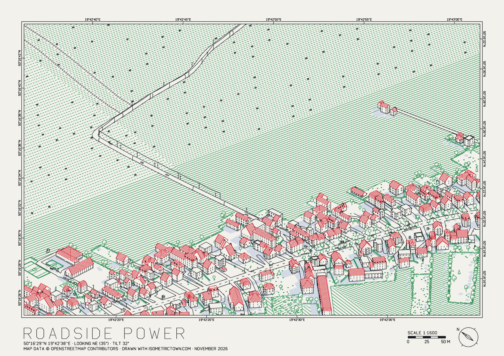

Connected roadside power
Round 29 · 50.2747° N, 19.7106° E · 1:1600 · bearing 35°
The short two-span line came from a 111 m map feature. Neighbouring road features made independent placement decisions, despite belonging to the same road.
Changes
- Compatible road sections join into routes before selecting power placement, side and spacing. Feature order and direction no longer control the result.
- Simple bends join; a clear straight continuation can pass a junction. Ambiguous forks, incompatible road classes, bridges and private accesses do not extend a route.
- Dedicated corner poles let wires follow bends, with regular poles kept clear of them.
- Urban eligibility is checked at each support. Water, building and airfield checks still apply to every accepted span. A pole is drawn only if a valid wire span uses it.
Reported location

Verification
Regression tests cover split, reversed and shuffled road features, local-coordinate shifts, right-angle corner supports, junctions, ambiguous forks, closed loops, exclusions, and omission of unsupported standalone poles. Existing water-crossing tests still pass.
Eight before/after LOD cases cover Mollis, Emmental, Midtown and the Interlaken lakeshore at 1:1000 and 1:1600. Changes remain confined to power linework. Midtown gains longer connected spans; its wasted-ink score rises by 0.1 percentage point. Other waste scores are unchanged at the reported precision.
The three intended golden changes are Hallstatt (one isolated pole removed), Midtown (connected roadside spans) and Nördlingen (rural portions no longer excluded by a road feature's urban midpoint). The golden sheets, selected LOD close-ups and reported location were checked on screen. No physical pen plot or exhaustive sweep across changing tile contexts was checked. Routes are still artistic inferences.